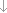
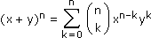
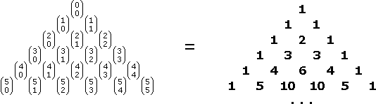
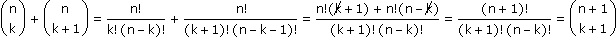
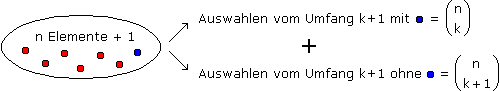
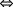
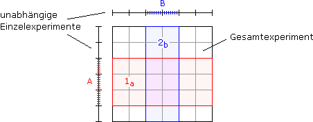
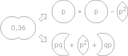

Anhang zu: WAHRSCHEINLICHKEITSRECHNUNG
BINOMSCHER LEHRSATZ UND PASCAL'SCHES DREIECK?
Die n-te Potenz eines Binoms entspricht n Positionen, die alle mit diesem Binom besetzt und miteinander multipliziert werden:
Pos 1Pos 2Pos n

(x + y)n = (x + y)(x + y)...(x + y)
Ausmultipliziert ist das die Summe aller Produkte, die von jeder Position entweder x oder y als Faktor beziehen. Das Produkt xn–kyk taucht in dieser Summe so oft auf, wie es Möglichkeiten gibt, aus n Positionen diejenigen auszwählen, die das y liefern. Also:

Wenn wir die bloßen Koeffizienten in Form zentrierter Zeilen für n = 0,1,2,... untereinander schreiben, erhalten wir das "Pascal'sche Dreieck".

Am schnellsten geht das, indem wir zwei Schenkel aus 1en und dann die Summe benachbarter Zahlen zwischen sie in die Zeile darunter schreiben.
Beweisvariante 1: algebraisch

Beweisvariante 2: kombinatorisch

AXIOMATISCHE WAHRSCHEINLICHKEITSRECHNUNG?
Im Skriptum haben wir die Wahrscheinlichkeitsregeln aus der Laplace-Definition gefolgert. Wir hätten auch von der Additionsregel für zwei sich nicht überdeckende Ereignisse ausgehen können:
P(A
 B) = P(A) + P(B)
B) = P(A) + P(B)Daraus folgt wegen
B = (B\A)
(A  B)
B)die Subtraktionsregel (mit der Komplementregel als Spezialfall) und wegen
A
B = A (B\A)die allgemeine Additionsregel.
In einem weiteren Schritt wird die Wahrscheinlichkeit soweit ihrer Bedeutung entkleidet und auf unendlich viele Elementarereignisse verallgemeinert, dass nur mehr eine abstrakte Wahrscheinlichkeitsalgebra bleibt: Ein Wahrscheinlichkeitsmaß nach Kolmogorow ist eine Funktion
P: {Ereignisse}
 [0, 1]
[0, 1]mit
P(Ω) = 1
und der Additionsregel für abzählbar viele Ereignisse A1, A2 ..., die sich nirgends überdecken:
P(A1
A2 ...) = P(A1) + P(A2) + ...Wenn Ω überabzählbar ist und alle Teilmengen von Ω als Ereignisse gelten, gibt es keine derartige Funktion. Daher reduziert man Ereignismengen auf sogenannte σ-Algebren, die Ω enthalten und im Hinblick auf abzählbare Vereinigungen und Komplementbildung abgeschlossen sind.
WAS IST A|B FÜR EIN EREIGNIS? REGELN DAZU?
Ein Ereignis A|B gibt es nicht, weil "|" keinen Mengenoperator bezeichnet, sondern als P(.|B) ein Wahrscheinlichkeitsmaß. Das Ereignis, um das es geht, ist A
B, das aber von P(.) und P(.|B) unterschiedlich bewertet wird:P(A
B) = P(AB|Ω=100%)  P(A|B) = P(AB|B=100%)Da P(.|B) genauso ein Wahrscheinlichkeitsmaß ist wie P(.), gelten auch dieselben Regeln:
Additionsregel: P(A1
A2|B) = P(A1|B) + P(A2|B) – P(A1A2|B)Subtraktionsregel: P(A2\A1|B) = P(A2|B) – P(A1
A2|B)Komplementregel: P(A|B) = 1 – P(A|B)
STRUKTURELLE UNABHÄNGIGKEIT?
Ein Zusammenschluss unabhängiger Experimente liegt vor, wenn sich die Einzelexperimente nicht gegenseitig beeinflussen. Ereignisse, die zu verschiedenen Einzelexperimenten gehören und zu solchen des Gesamtexperiments werden, indem im Rahmen des Gesamtexperiments nur auf das Ergebnis des jeweiligen Einzelexperiments geschaut wird, behalten ihre Wahrscheinlichkeiten und sind unabhängig:

P(A) = P(1a) = P(1a|2b)
P(B) = P(2b) = P(2b|1b)
P(B) = P(2b) = P(2b|1b)
Aufgabe: Für einen gezinkten Würfel liegt die Wahrscheinlichkeit, dass bei 2-maligem Würfeln zumindest ein 6er gewürfelt wird, bei 36%. Wie groß ist die Wahrscheinlichkeit, bei nur einem Wurf einen 6er zu würfeln?
A = Ereignis, dass bei einem Einzelwurf ein 6er gewürfelt wird
ia = Ereignis, dass beim i-ten Wurf im Rahmen eines Doppelwurfs ein 6er gewürfelt wird
Geg: P(1a
2a) = 0,36Ges: P(A) = P(1a) = P(2a) = p
P(1a
2a) = P(1a) + P(2a) – P(1a 2a) = P(1a) + P(2a) – P(1a)P(2a)p2 – 2p + 0,36 = 0
 p1,2 =
p1,2 = 2 ± √(–2)2 – 4·0,36
2
 1,8
1,8  0,20
0,20Weitere Lösungsvariante:
